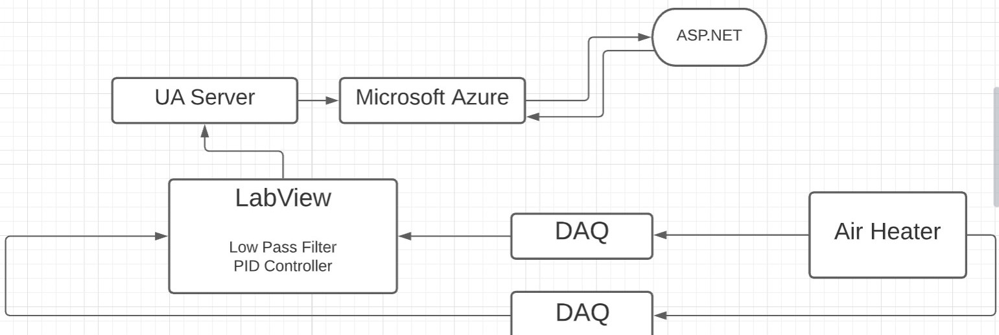
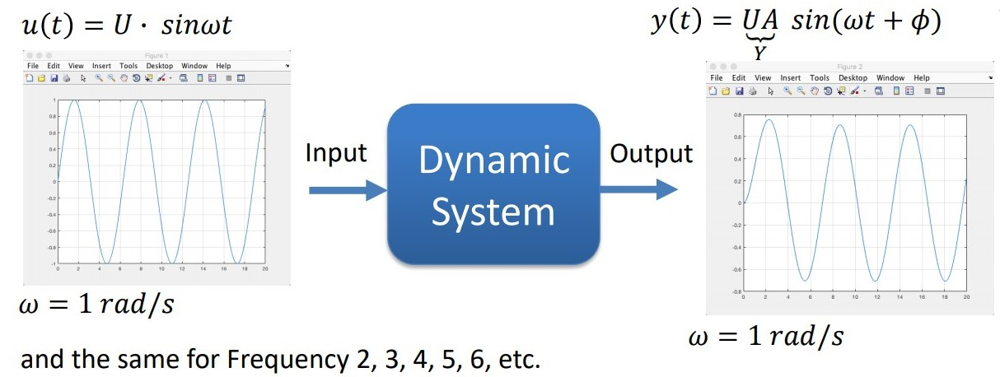
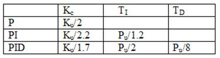
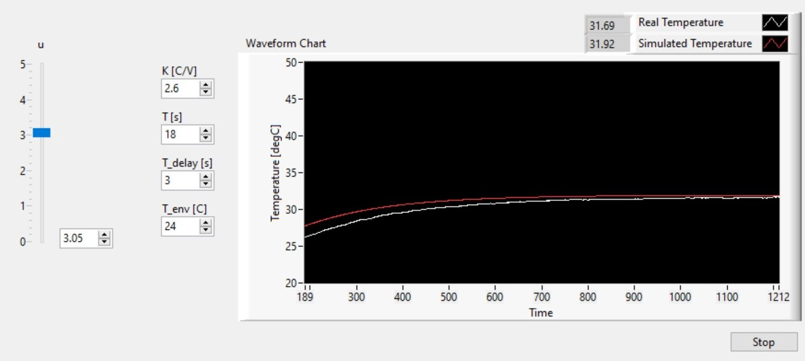
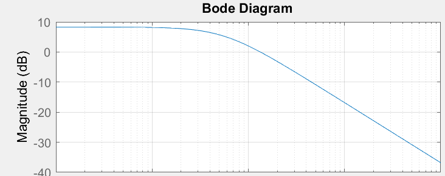
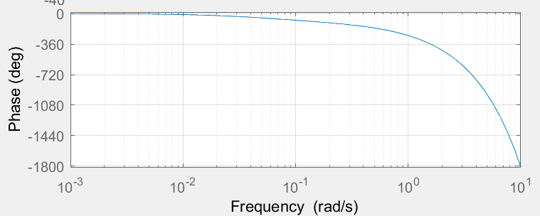
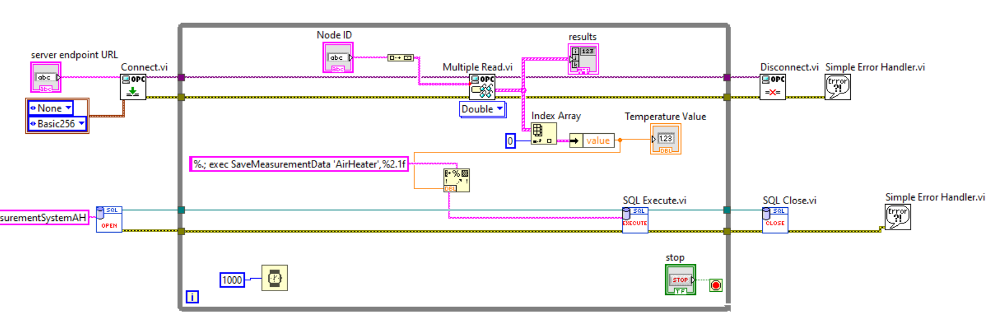
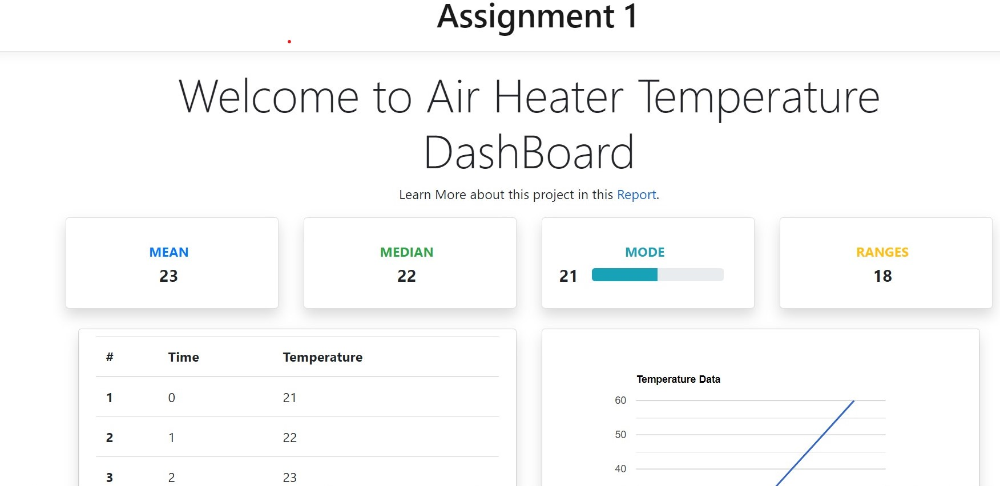
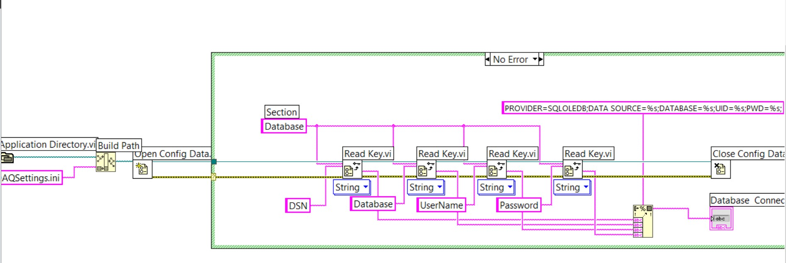

In Lab 1, the temperature of the Air Heater has been collected using DAQ-6000, and signal has been passed to the LABVIEW in PC. In the Labview, PID controller, Low pass Pass Filter and Scaling has been used to control the output signal to reach the set-point and pass the output signal back to the Air Heater. The data had been stored in OPC server from the Labview. Moreover, the data data had been sent to MySQL server in Azure Database. After the database had been implementation where the data should be stored in the Cloud using Microsoft Azure. Beside creating database, the website has been created using ASP.Net to monitor the real time value.
Cyber Security issues should also be considered.
Modelling and Simulation. Control Design and Aalysis with MATLAB
-Frequency Response, Stability Analysis, Simulation, etc.
Implementing Control System in LabView.
Use OPC UA - The Industry 4.0 Implementation of OPC.
Cloud based datalogging. SQL server stored in Microsoft Azure.
Monitoring and Analysis in the cloud. Web-based ASP.Net/C# system hosted at Microsoft Azure.
Give an overview and analyze issues regarding Cyber Security and GDRP for the system you create.
System Overview

Figure 1: System Overview
Internet 4.0
Industry 4.0 refers to a new phase in the Industrial Revolution that focuses heavily on interconnectivity, automation, machine learning, and real-time data. Industry 4.0, which encompasses IIoT and smart manufacturing, marries
physical production and operations with smart digital technology, machine learning, and big data to create a more holistic and better connected ecosystem for companies that focus on manufacturing and supply chain management.
While every company and organization operating today is different, they all face a common challenge—the need for connectedness and access to real-time insights across processes, partners, products, and people.[1]
Scada
Supervisory control and data acquisition (SCADA) is a system of software and hardware elements that allows industrial organizations to: Control industrial processes locally or at remote locations, Monitor, gather, and process real-time
data, Directly interact with devices such as sensors, valves, pumps, motors, and more through human-machine interface (HMI), software and Record events into a log file.[2]
Cloud Computing
Cloud computing is the delivery of different services through the Internet. These resources include tools and applications like data storage, servers, databases, networking, and software.Rather than keeping files on a proprietary
hard drive or local storage device, cloud-based storage makes it possible to save them to a remote database. As long as an electronic device has access to the web, it has access to the data and the software programs to run
it. Cloud computing is a popular option for people and businesses for a number of reasons including cost savings, increased productivity, speed and efficiency, performance, and security.[3]
Figure 2: Iaas vs Paas vs Saas
Frequency Response and Stability Analysis
The frequency response of a system is a frequency dependent function which expresses how a sinusoidal signal of a given frequency on the system input is transferred through the system. Each frequency component is a sinusoidal signal
having certain amplitude and a certain frequency. The frequency response is an important tool for analysis and design of signal filters and for analysis and design of control systems. The frequency response can be found experimentally
or from a transfer function model. The frequency response of a system is defined as the steady-state response of the system to a sinusoidal input signal. When the system is in steady-state, it differs from the input signal
only in amplitude/gain (A) and phase lag (𝜙).[3]

Figure 3: Frequency Response Analysis
Bode Plot
Bode plots display phasors graphically; the gain in decibels and phase in degrees are plotted against the frequency in Hertz. The horizontal scale is logarithmic and the vertical scales are linear.
The Bode plot or the Bode diagram consists of two plots −
Magnitude plot
Phase plot
In both the plots, x-axis represents angular frequency (logarithmic scale). Whereas, yaxis represents the magnitude (linear scale) of open loop transfer function in the magnitude plot and the phase angle (linear scale)
of the open loop transfer function in the phase plot. The magnitude of the open loop transfer function in dB is
- M=20log|G(jω)H(jω)| The phase angle of the open loop transfer function in degrees is - ϕ=∠G(jω)H(jω) Note − The base of logarithm is 10.
PID Controller
A PID controller is a three-term controller that has proportional, integral and derivative control coefficients. It is named after its three correcting terms and its sum produce a control action for manipulating variable. It measures
the output of a process and controls the input by maintaining the output at a desired value (also called as set point). The most common example of PID controller is controlling temperature in many industrial applications.
Figure 4: PID Control
Tuning Method
Before the working of the PID controller takes place, it must be tuned to suit with dynamics of the process to be controlled. Designers give the default values for P, I, and D terms, and these values couldn’t give the desired performance
and sometimes leads to instability and slow control performances. Different types of tuning methods are developed to tune the PID controllers and require much attention from the operator to select the best values of proportional,
integral, and derivative gains. Some of these are given below. PID controllers are used in most industrial applications but one should know the settings of this controller to adjust it correctly to generate the preferred output.
Here, tuning is nothing but the procedure of receiving an ideal reply from the controller through setting best proportional gains, integral & derivative factors. The desired output of the PID controller can be obtained by tuning
the controller. There are different techniques available to get the required output from the controller like trial &error, Zeigler-Nichols & process reaction curve. The most frequently used methods are trial & error, Zeigler-Nichols,
etc.
Zeigler-Nichols method: Zeigler-Nichols proposed closed-loop methods for tuning the PID controller. Those are the continuous cycling method and damped oscillation method. Procedures for both methods are the same but
oscillation behavior is different.

Figure 5: Zeigler-Nichols Table
In this, first, we have to set the p-controller constant, Kp to a particular value while Ki and Kd values are zero. Proportional gain is increased till the system oscillates at a constant amplitude. Gain at which system produces constant oscillations
is called ultimate gain (Ku) and the period of oscillations is called the ultimate period (Pc). Once it is reached, we can enter the values of P, I, and D in the PID controller by Zeigler-Nichols table
Trial and Error Method: It is a simple method of PID controller tuning. While the system or controller is working, we can tune the controller. In this method, first, we have to set Ki and Kd values to zero and increase
the proportional term (Kp) until the system reaches oscillating behavior. Once it is oscillating, adjust Ki (Integral term) so that oscillations stop and finally adjust D to get a fast response.
OPC UA
OPC is the most used versatile way to communicate in the automation layer in all types of industry. Over the years it has evolved from the start with simple Data access (DA) over Alarm & Events (AE) to the more advanced Historical
Data Access (HDA) to have quite extensive functionality and reach.
The most significant difference between classical OPC and OPC UA is that it doesn’t rely on OLE or DCOM technology from Microsoft that makes it possible to implement it on any platform if that being Apple, Linux (JAVA) or Windows.
The other very important part of UA is the possibility to use structures or models. This means that the data tags or points can be grouped and be given context which make governance and maintenance much easier. These models
can be identified in runtime which makes it possible for a client to explore connection possible by asking the server.
Figure 6: OPC UA
OPC UA Information Modelling
The information modelling is very modern in OPC UA. These models can be defined by manufactures or protocols like BACNet but it can also contain more of a MESH structure where very complex relations and connections between
points and nodes can be defined. The possibility also exist to have data structures so that certain data always is grouped and handled as one piece. This is important in many application to be sure that the data set
is taken at the same time.
Figure 7: OPC Information Model
OPC UA Communication layers
OPC UA is as said before built to be platform independent and the communication is built into layers on top of the standard TCP/IP stack. Above the standard transport layers there are two layers, one that handles the session
and one to establish a secure channel between the client and server. The transport layer is made up of TCP/IP and on top of that SSL, HTTP or HTTPS. The Communication layer secure the communication channel not just
that the data is corrupted but also it secure the authentication so that the end points can’t be infiltrated and changed. This is based on X.509 certificates that have three parts to it and the first peer to peer trust
needs to be manually done but after that the rest is taken care of securely.
Figure 8: OPC Communication Layer
Applications with OPC UA
So far OPC UA are mostly used for bridging between different OPC servers, this is called tunneling. This is something that for example KEPServerEX OPC UA tunnel does. Other applications include the GE Global discovery server
and the same control system that have full OPC UA support for browsing the data structures. This is still quite uncommon but the development goes fast and there is a lot of work done in order to include data models
for transferring models from BACNet, ISA95 and PLCopen.
Figure 9: OPC Tunneling
AZURE SQL Database
Azure SQL Database is a fully managed platform as a service (PaaS) database engine that handles most of the database management functions such as upgrading, patching, backups, and monitoring without user involvement. Azure SQL
Database is always running on the latest stable version of the SQL Server database engine and patched OS with 99.99% availability. PaaS capabilities that are built into Azure SQL Database enable you to focus on the domain-specific
database administration and optimization activities that are critical for your business.
With Azure SQL Database, you can create a highly available and high-performance data storage layer for the applications and solutions in Azure. SQL Database can be the right choice for a variety of modern cloud applications because
it enables you to process both relational data and non-relational structures, such as graphs, JSON, spatial, and XML.
ASP.NET Core Web App
ASP.NET is a popular web-development framework for building web apps on the .NET platform. ASP.NET Core is the open-source version of ASP.NET, that runs on macOS, Linux, and Windows. ASP.NET Core was first released in 2016 and
is a re-design of earlier Windows-only versions of ASP.NET.
ASP.NET Core is designed to allow runtime components, APIs, compilers and languages evolve quickly, while still providing a stable and supported platform to keep apps running. Multiple versions of ASP.NET Core can exist side by
side on the same server. Meaning one app can adopt the latest version, while other apps keep running on the version they were tested on. ASP.NET Core provides various support lifecycle options to meet the needs of your app.
You can chose a long-term support release, or run with the latest release if you commit to upgrade more often.
ASP.NET apps can be developed and run on Windows, Linux, macOS, and Docker. The Visual Studio family of products has tools for building .NET apps on any operating system. There are also command line tools and extensions for many
popular edit
The ASP.NET Core runtime that your app runs on can be deployed as part of your app, or installed centrally on your web server. ASP.NET Core is also perfectly suited for Docker containers.
Cyber Security
Cybersecurity is the practice of protecting systems, networks, and programs from digital attacks. These cyber-attacks are usually aimed at accessing, changing, or destroying sensitive information, extorting money from users, or
interrupting normal business processes. Different types of Cyber Security threats:
Ransomware
Malware
Social engineering
Malware
Phishing
To be secured:
Passwords
Firewall
Antivirus and anti-malware software
Access control
VPN
Wi-Fi Network can be used
GDPR
EU regulation. All countries and companies within EU need to follow the regulation. Also outside EU if the company save data about EU citizens
Purpose:
Protect the privacy and the data stored, i.e., protection of your digital life
Better control of your personal data
Methods
We have used LabView black-box system from last courses to create Air Heater model.
Figure 11: LabView Code
Trial and error method was used to check what parameters does it need to have to make it as like a real air heater.

Figure 12: Trial & Error Method
The Bode diagram was created to find the gain and the phase lag of the process.

Figure 13: Bode magnitude plot

Figure 14: Bode phase plot
#
w(rad/s)
A(w)
Φ w(degree)
1
0.001
8.298
-1.2
2
0.01
8.161
-11.9
3
0.1
2.0258
-78.1
4
1
-16.8194
-259
5
3
-26.35
-604.7
6
5
-30.79
-949.8
7
10
-37.8
-1808.6
Skogestad's method was used to get the PI controller parameter and Bode plot was drawn.
Figure 15: Bode phase plot
Using the Ziegler-Nichols method, the Skogestad method was compared which was used. Skogestad method works better as the "Golden Rules" of stability analyzes states the Gain should be between 6-12dB and the PM should be between
30-60. After getting all the required values, the PI controller was implemented in the LabView, which was tested. And the data was sent to Azure SQL using OPC UA.png

Figure 16: OPC UA
Moreover, we have created Web App to visualize the data in real time, in ASP.Net programming. And we have used Visual Studio as our IDE, and used HTML, CSS, Bootstrap as our frontend. Later,we have deployed our app in Azure Cloud system.
Results

Figure 17: ASP.NET

Figure 18: LabView
Conclusion
In this assignment, we have come to know how IOT works and how to implement it. We have got thorough knowledge of LabView, Control System, Database Connectivity, Website and OPC.